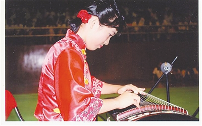

一条长廊的十二种光
活动提案 · 排期待定
校园长廊 · 场地待确认
03THE OTHER CLASSROOM
六种社团创作提案，六种认识彼此的方式。下面的名称、活动和公告均为样刊示例，尚未形成真实社团或实际活动安排。

FUCHENG CAMPUS / HAIKOU点击条目查看活动提案，可在当前设备收藏。本站不收集报名信息，也不代替正式社团报名。
04ON THE NOTICEBOARD / 活动提案墙
这些是尚未排期的创作提案，
不是学校或社团的正式通知。
活动提案 · 排期待定
校园长廊 · 场地待确认
活动提案 · 排期待定
开放场地 · 需校方许可
工作坊提案 · 排期待定
教室或机房 · 场地待确认
共创提案 · 排期待定
艺术空间 · 场地待确认
征稿提案 · 无实际投稿渠道
阅读空间 · 场地待确认
训练提案 · 排期待定
球场 · 场地待确认